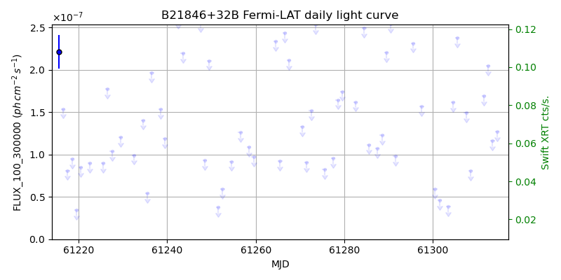
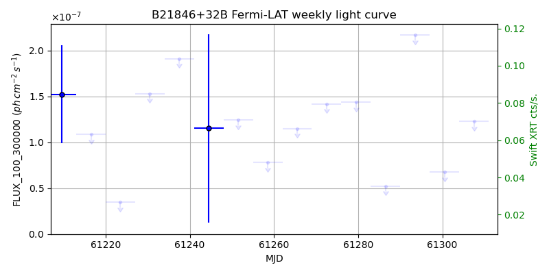
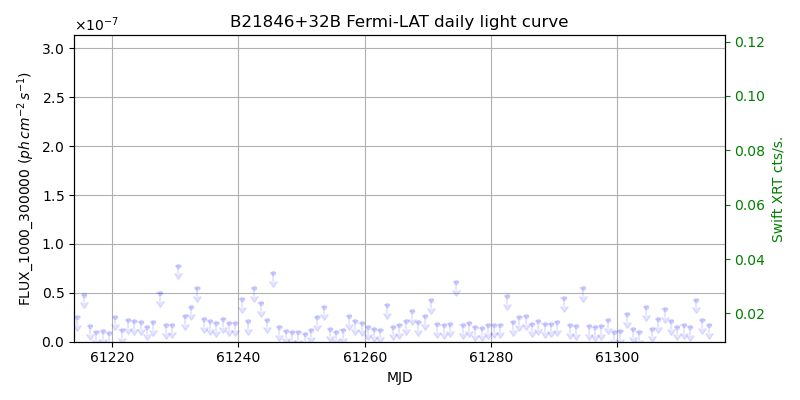
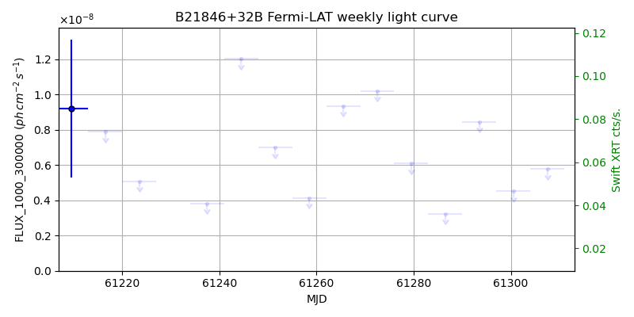

LAT Lightcurve site: https://fermi.gsfc.nasa.gov/ssc/data/access/lat/msl_lc/source/B2_1846p32B
Swift site: https://www.swift.psu.edu/monitoring/source.php?source=B21846+32B
NED: Query
Time of last update of this page: UT: 2026-10-02 15:25 (MJD: 61315.643)
| Property | Value |
|---|---|
| R.A. | 18:48:34.32 |
| Dec. | 32:43:58.8 |
| z | 0.918 |
| 3FGL SpectrumType | |
| 3FGL PL Index | -1.00 |
| 3FGL Flux_100_300000 | -1.00e+00 |
| 3FGL Flux_1000_300000 | -1.00e+00 |
| 3FGL Flux >200 GeV | -1.00e+00 |
| 3FGL Extrap. Crab >200 GeV | -1.00 |
| 3FGL Flux After EBL Absorption >200GeV | -1.00e+00 |
| 3FGL EBL Crab Fraction >200GeV | -1.00 |

| MJD | dMJD | Flux | dFlux | Frac3FGL | FracCrab>200GeV | EBLFracCrab>200GeV |
|---|---|---|---|---|---|---|
| 61310.50 | 0.50 | 2.74e-07 | 0.00e+00 | 0.00 | 0.00 | -0.00 |
| 61311.50 | 0.50 | 1.69e-07 | 0.00e+00 | 0.00 | 0.00 | -0.00 |
| 61312.50 | 0.50 | 2.05e-07 | 0.00e+00 | 0.00 | 0.00 | -0.00 |
| 61313.50 | 0.50 | 1.16e-07 | 0.00e+00 | 0.00 | 0.00 | -0.00 |
| 61314.50 | 0.50 | 1.27e-07 | 0.00e+00 | 0.00 | 0.00 | -0.00 |

| MJD | dMJD | Flux | dFlux | Frac3FGL | FracCrab>200GeV | EBLFracCrab>200GeV |
|---|---|---|---|---|---|---|
| 61279.50 | 3.50 | 1.44e-07 | 0.00e+00 | 0.00 | 0.00 | -0.00 |
| 61286.50 | 3.50 | 5.21e-08 | 0.00e+00 | 0.00 | 0.00 | -0.00 |
| 61293.50 | 3.50 | 2.17e-07 | 0.00e+00 | 0.00 | 0.00 | -0.00 |
| 61300.50 | 3.50 | 6.76e-08 | 0.00e+00 | 0.00 | 0.00 | -0.00 |
| 61307.50 | 3.50 | 1.23e-07 | 0.00e+00 | 0.00 | 0.00 | -0.00 |

| MJD | dMJD | Flux | dFlux | Frac3FGL | FracCrab>200GeV | EBLFracCrab>200GeV |
|---|---|---|---|---|---|---|
| 61310.50 | 0.50 | 1.71e-08 | 0.00e+00 | 0.00 | 0.00 | -0.00 |
| 61311.50 | 0.50 | 1.48e-08 | 0.00e+00 | 0.00 | 0.00 | -0.00 |
| 61312.50 | 0.50 | 4.31e-08 | 0.00e+00 | 0.00 | 0.00 | -0.00 |
| 61313.50 | 0.50 | 2.24e-08 | 0.00e+00 | 0.00 | 0.00 | -0.00 |
| 61314.50 | 0.50 | 1.67e-08 | 0.00e+00 | 0.00 | 0.00 | -0.00 |

| MJD | dMJD | Flux | dFlux | Frac3FGL | FracCrab>200GeV | EBLFracCrab>200GeV |
|---|---|---|---|---|---|---|
| 61279.50 | 3.50 | 6.08e-09 | 0.00e+00 | 0.00 | 0.00 | -0.00 |
| 61286.50 | 3.50 | 3.24e-09 | 0.00e+00 | 0.00 | 0.00 | -0.00 |
| 61293.50 | 3.50 | 8.46e-09 | 0.00e+00 | 0.00 | 0.00 | -0.00 |
| 61300.50 | 3.50 | 4.53e-09 | 0.00e+00 | 0.00 | 0.00 | -0.00 |
| 61307.50 | 3.50 | 5.79e-09 | 0.00e+00 | 0.00 | 0.00 | -0.00 |
--------------------------------------------------------- Using user-supplied coords: 18:48:34.32 32:43:58.8 2000 --------------------------------------------------------- FLWO UT night of: 2026-10-03 Local Sid. @ Midnight: 00:24 Sunset (-15.0) (local, UT): 19:14 02:14 Sunrise (-15.0) (local, UT): 05:12 12:12 Moonrise (local, UT): 22:48 05:48 Moonset (local, UT): Moon phase: 0.53 --------------------------------------------------------- AzTime LSID UT Obj_el Obj_az Mn_el Mn_az Sep. --------------------------------------------------------- 19:14 19:37 02:14 79.9 279.3 -28.5 20.1 119.9 19:44 20:07 02:44 73.5 279.0 -26.2 26.7 120.0 20:14 20:37 03:14 67.2 280.0 -23.2 32.8 120.0 20:44 21:07 03:44 60.9 281.5 -19.6 38.5 120.1 21:14 21:37 04:14 54.7 283.2 -15.7 43.6 120.1 21:44 22:07 04:44 48.5 285.2 -11.3 48.4 120.1 22:14 22:37 05:14 42.4 287.3 -6.5 52.7 120.2 22:44 23:07 05:44 36.3 289.6 -0.8 56.7 120.2 23:14 23:37 06:14 30.3 292.1 3.8 60.4 120.2 23:44 00:07 06:44 24.4 294.7 9.1 63.9 120.2 00:14 00:38 07:14 18.7 297.6 14.6 67.1 120.2 00:44 01:08 07:44 13.1 300.6 20.3 70.2 120.2 01:14 01:38 08:14 7.8 304.0 26.1 73.1 120.2 01:44 02:08 08:44 2.7 307.6 32.1 76.0 120.2 02:14 02:38 09:14 -1.4 311.5 38.1 78.8 120.2 02:44 03:08 09:44 -7.0 315.9 44.2 81.7 120.2 03:14 03:38 10:14 -11.4 320.6 50.3 84.8 120.2 03:44 04:08 10:44 -15.2 325.8 56.5 88.1 120.2 04:14 04:38 11:14 -18.5 331.4 62.7 91.9 120.3 04:44 05:08 11:44 -21.3 337.4 68.9 96.9 120.3 05:12 05:37 12:12 -23.3 343.5 74.7 103.8 120.3 --------------------------------------------------------- Dark hours >55 deg.: 1.98 srcstart (UT): 2026-10-03 02:13 srcend (UT): 2026-10-03 04:12